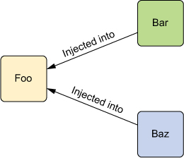
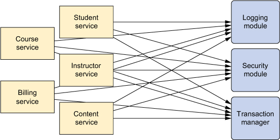
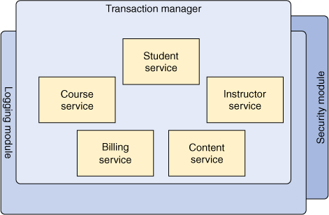
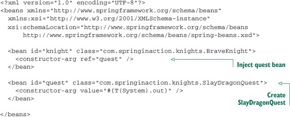

Introduction to Spring Framework
Motivation for spring and basics of how it works
Content
Motivation
Problem #1
package sia.knights;
public class DamselRescuingKnight implements Knight {
private RescueDamselQuest quest;
public DamselRescuingKnight() {
this.quest = new RescueDamselQuest();
}
public void embarkOnQuest() {
quest.embark();
}
}Problem #1 - Tight Coupling
- Quest is a dependency of a DamselRescuingKnight class.
- Tightly coupled code - knight can only go on RescueDamselQuest
- Object initialized within class with new operator. how would you test?
Solution: Decouple by “Injecting” Dependencies
- Giving object its own dependencies than having to as opposed to object acquiring its own dependencies
- “Foo” class has dependencies “Bar” and “Baz”, which are “injected” into “Foo”.

Decoupled Class - Code Example
package sia.knights;
public class BraveKnight implements Knight {
private Quest quest;
public BraveKnight(Quest quest) {
this.quest = quest;
}
public void embarkOnQuest() {
quest.embark();
}
}“Injecting” Dependencies - Advantages
- BraveKnight no longer coupled to a quest.
- Mock an implementation of Quest to test it.
Problem #2 - Cross Cutting concerns
Business logic is mixed with logging, metrics, etc.
Logging, metrics, etc are common across components

Problem #2 - Code Example
package sia.knights;
import java.io.PrintStream;
public class Minstrel {
private PrintStream stream;
public Minstrel(PrintStream stream) {
this.stream = stream;
}
public void singBeforeQuest() {
stream.println("Fa la la, the knight is so brave!");
}
public void singAfterQuest() {
stream.println("Tee hee hee, the brave knight " +
"did embark on a quest!");
}
}Problem #2 - Code Example (Contd.)
Should a knight manage his own minstrel?
package sia.knights;
public class BraveKnight implements Knight {
private Quest quest; //magically injected
private Minstrel minstrel; //magically injected
public BraveKnight(Quest quest) {
this.quest = quest;
this.minstrel = minstrel;
}
public void embarkOnQuest() {
minstrel.singBeforeQuest();
quest.embark();
minstrel.singAfterQuest();
}
}Solution - Aspect Oriented Programming
Now, we can focus on business logic - logging, metrics security, etc. do not “litter” application logic

Aspect-oriented-programming in Spring
- Spring has support for aspects.
- Need provide some config to spring
Problem #3 - Do not repeat yourself (DRY)
- Eg writing db code - get connection, handle exception, retry - everytime
- Solution - Spring reduces boilerplate code by providing templates (eg JDBC template)
Basics of Spring
Need for Spring
- Name “Spring” comes from “winter” of traditional J2EE
- J2EE - heavy, complex and require extending framewok classes, rigid xml config etc. (dunno much)
- Light weight “container” to provide services to POJOs. e.g @transactional
- (POJO = Plain Old Java Object i.e. not implement/extend framework classes)
Spring versions
- Developed in 2002-3 by Rod Johnson. Spring 1.0 in 2004
- 2006 -> Spring 2.0 -> Simplified XML Config
- 2006 -> Spring 2.5 -> Annotation Config
- 2016 (June) –> Latest Major Verion = Spring 4
Spring is Modular
- Bunch of different projects and sub-projects depending on what you want
- Has a lot of projects - Being added and developed actively!
- Lets you do a LOT of different stuff.
Spring Projects
- Official website: https://spring.io/
- Spring is Popular: https://springoneplatform.io/2016/sponsors
Spring High Level View

Spring container
- Spring container is responsible for creating objects( “managed objects” or “beans”) and managing their complete life cycle from creation till destruction.
- Which objects should it manage? depends upon what configuration you provide to spring.
- Spring container = bean bag :P
Spring beans
- A Bean is an object that is instantiated, assembled, and otherwise managed by a Spring container.
- Generally a singleton (default), but need not be (called prototype bean)
Solution #1 - Dependency Injection using Spring - Code Example (1/3)
Lets go back to our BraveKnight class:
package sia.knights;
public class BraveKnight implements Knight {
private Quest quest;
public BraveKnight(Quest quest) {
this.quest = quest;
}
public void embarkOnQuest() {
quest.embark();
}
}Solution #1 - Dependency Injection using Spring - Code Example (Contd..)
Suppose we have this implementation of quest interface:
package sia.knights;
import java.io.PrintStream;
public class SlayDragonQuest implements Quest {
private PrintStream stream;
public SlayDragonQuest(PrintStream stream) {
this.stream = stream;
}
public void embark() {
stream.println("Embarking on quest to slay the dragon!");
}
}How to inject beans
Finally, here's the main method
package sia.knights;
import org.springframework.context.support.
ClassPathXmlApplicationContext;
public class KnightMain {
public static void main(String[] args) throws Exception {
ClassPathXmlApplicationContext context =
new ClassPathXmlApplicationContext(
"META-INF/spring/knight.xml");
//or get context from KnighConfig.class if you choose
Knight knight = context.getBean(Knight.class);
knight.embarkOnQuest();
context.close();
}
}How to configure beans
- Java based config (recommended)
- Xml based config ( not recommended)
- Annotation based config.
- Mix and match the above 3
Java based config
Here Configuration is the metadata we provide to spring to create those beans. (can be in java, or in xml) Can have multiple of these configuration files which can be imported. Advantage - one place, centralized, and compiled!
package sia.knights.config;
import org.springframework.context.annotation.Bean;
import org.springframework.context.annotation.Configuration;
import sia.knights.BraveKnight;
import sia.knights.Knight;
import sia.knights.Quest;
import sia.knights.SlayDragonQuest;
@Configuration
@Import (other config files)
public class KnightConfig {
@Bean
public Knight knight() {
return new BraveKnight(quest());
}
@Bean
public Quest quest() {
return new SlayDragonQuest(System.out);
}
}How to inject beans
Why? Some libraries dont support java based config. (Eg: BAS Java)

How to inject beans
Annotation based config
package sia.knights.config;
import org.springframework.context.annotation.Bean;
import org.springframework.context.annotation.Configuration;
import sia.knights.BraveKnight;
import sia.knights.Knight;
import sia.knights.Quest;
import sia.knights.SlayDragonQuest;
@Configuration
@ComponentScan (basePackages = "sia.knights")
public class KnightConfig {
@Autowired
private Quest quest; //need quest to have @Component, and return a bean
@Bean
public Knight knight() {
return new BraveKnight(quest());
}
}How to inject beans:
- beans could be scattered, and you may need to scan the entire package.
- @Autowire mean autowire by type first; only one bean, else use @qualifier. @Resource - autowire by name
Annotation based config:
How to get started with spring:
- Safari books online!
- Video lectures - Orielly Learn Spring and Spring boot
- Book - Spring in Action 4th edition
“Injecting” Dependencies - Advantages (Backup)
`java
package sia.knights;
import static org.mockito.Mockito.*;
import org.junit.Test;
import sia.knights.BraveKnight; import sia.knights.Quest;
public class BraveKnightTest {
public void knightShouldEmbarkOnQuest() { Quest mockQuest = mock(Quest.class); BraveKnight knight = new BraveKnight(mockQuest); knight.embarkOnQuest(); verify(mockQuest, times(1)).embark(); }
} `